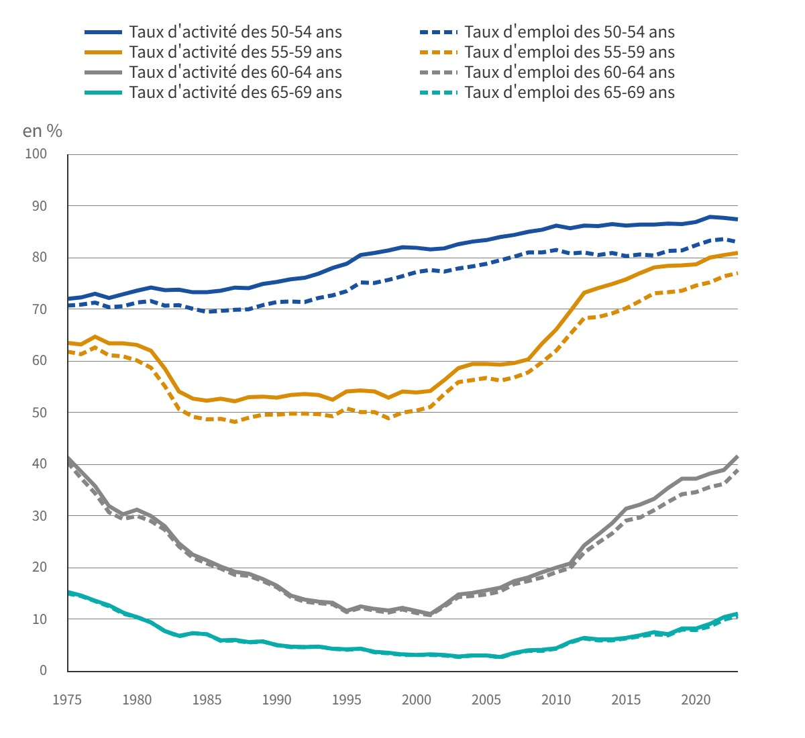

La France métropolitaine face au vieillissement

Phénomène mondial, le vieillissement de la population touche aussi bien des pays développés que des pays émergents dans le monde entier. En France, le part de la population âgée est à 21.75% en 2023 avec un 12e rang au niveau mondial. Ce phénomène est aujourd'hui sans aucun doute non-négligeable en Europe et en France.
Évolution de la population de 1970 à 2070 (scénario central) (Source:INSEE,2021)

Les enjeux importants autour du vieillissement sont diversifiés : le problème de l’isolement, les distributions des ressources, personnels et matériels, les dépenses publiques. En effet, certains pays tels que le Japon, "super-aged socity" depuis 10 ans avec un taux de population âgée 29.56% (2023), confrontent les défis des systèmes de retraites et financement sanitaire et de la distribution de la population active de manière critique.
Ainsi, observer géographiquement le vieillissement est crucial, car cela nous permet de corriger l'inégalité spatiale et sociale et de réaliser une société solidaire et équitable. Nous constatons la répartition inégale de la population en termes de densité, mais aussi de tronçon d'age sur les territoires français. Ce site propose une lecture géographique et prospective du phénomène.
Astuce : Cliquez sur un département et découvrez la répartition de la population par âge à côté de la carte !
Les points d'information locaux dédiés aux personnes âgées à Strasbourg sont localisés.
Si vous cherchez pour les autres régions, cliquez
ici.
Si vous cherchez les Ephads, consultez
ici.
*En raison de la taille limité des données, il y a seulement quatre départements affichés ici.
La carte ci-desus montre la répartition des personnes âgées de 65 ans et plus en France métropolitaine. Les écarts régionaux sont significatifs. La population est jeune au Nord, au Nord‑Ouest et dans une partie du Sud‑Est du pays, ainsi que dans les départements qui contiennent une métropole. La population est en revanche plus âgée sur la diagonale des faibles densités, notamment dans les départements sans grande agglomération, ainsi que sur une grande partie du littoral.
Le vieillissement est une des causes principales qui crént des déséquilibres démographiques marqués. Face à cette situation, nous rencontrons des nouveaux défits. Deux exemples des enjeux majours constatés sont montrés ci-dessous.
Taux d'activité et d'emploi des seniors de 1975 à 2023 (Source : INSEE, 2024)
Pourtant, elle reste très hétérogène en fonction de l’âge...
D’ici 2070, la population augmenterait moins vite ou continuerait de diminuer dans toutes les régions de France métropolitaine. La population vieillirait sensiblement sur tous les territoires : dans 62 départements, plus de 30 % des habitants seraient âgés de 65 ans ou plus en 2070 alors qu’aucun département n’est dans cette situation en 2018. Ainsi, le nombre de seniors dépendants sera de plus en plus important. De ce fait, la dépense publique d'aides aux personnes âgées ainsi que les besoins matérielles et du personel augumenteront de manière significative.
Pyramides des âges – Projections de population par région et département 2018 - 2070 : allez au page INSEE d' ici.

Nous avons bien affirmé les enjeux et défits socio-économiques, démographiques et territoriales du vieillissement de la population en France métropolitainne. Non seulement dans l'Hexagone, les situations sont à la fois critiques dans les territoires d'outre-mer. La Guadeloupe et la Martinique sont de loin les deux départements où on trouve le plus de supercentenaires (plus de 110 ans) par rapport à leur population : huit fois plus que dans l'Hexagone (Vallin, 2021, cité par Meslé et Camarda, 2024).
Comment mieux prendre en compte et identifier les souhaits réels des futures personnes âgées ? Comment adapter l’offre de structures à leurs besoins et garantir un éventail de choix ? Comment lutter contre les disparités entre les territoires ?